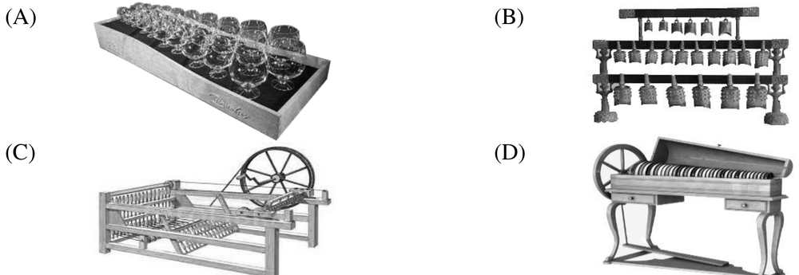

先讀文章、作答下方的題目，再展開最後的「看答案、依據句與逐段中譯」。也可以到互動練習線上作答，交卷後自動批改。
第 1 段Benjamin Franklin, one of the Founding Fathers of the United States, was not only a great politician but also a highly accomplished scientist and inventor. Of his many achievements, probably the least well-known are his accomplishments in music. He invented an instrument for which both Mozart and Beethoven composed music—the glass armonica.
第 2 段In 1761, while living in England, Franklin heard a performer playing musical glasses. Franklin was charmed by the music, but felt that there was a better way to create the same sound. He had a glassmaker create thirty-seven hemispheres made of glass, with each being a different size and thickness to produce different pitches. The glass hemispheres were color coded with paint to identify the notes. Franklin ran an iron rod through a hole in the top of each hemisphere so that they could nest together from largest to smallest. He linked all of this to a device shaped like a spinning wheel, with a foot control that turned the rod, making the glass hemispheres rotate. Franklin moistened his fingers and held them against the rims of the glass hemispheres as they turned, producing a unique sound. He mastered the instrument and took it to parties and gatherings to play for his friends and acquaintances. The instrument became so popular that thousands were built and sold.
第 3 段But musical fashions changed. Music was moving out of the relatively small halls of Mozart’s day into the large concert halls of the 19th century, and without amplification, the glass armonica simply couldn’t be heard. Concert reviews from the period mourned the fact that the armonica sounded wonderful—only when it could be heard. So, alas, Franklin’s marvelous invention was ultimately abandoned. The popularity of the instrument faded early in the 19th century, but it is still played occasionally today.
49.Which of the following is the closest illustration of Benjamin Franklin’s invention?

50.Which of the following statements is true about how the glass armonica works?
51.According to the passage, why did the glass armonica lose its popularity?
52.What does the highlighted “they” in the second paragraph refer to?
| 題號 | 官方答案 | 答對率 | 鑑別度 |
|---|---|---|---|
| 49 | (D) | 50% | 53 |
| 50 | (D) | 53% | 72 |
| 51 | (C) | 69% | 62 |
| 52 | (B) | 65% | 64 |
答對率與鑑別度出處：大考中心 110 學年度學科能力測驗統計圖表：英文科答對率及鑑別度表
第 2 段Franklin ran an iron rod through a hole in the top of each hemisphere so that they could nest together from largest to smallest.
第 2 段He linked all of this to a device shaped like a spinning wheel, with a foot control that turned the rod, making the glass hemispheres rotate.
第 2 段Franklin moistened his fingers and held them against the rims of the glass hemispheres as they turned, producing a unique sound.
第 3 段Music was moving out of the relatively small halls of Mozart’s day into the large concert halls of the 19th century, and without amplification, the glass armonica simply couldn’t be heard.
第 2 段Franklin ran an iron rod through a hole in the top of each hemisphere so that they could nest together from largest to smallest.
第 1 段美國開國元勳之一的富蘭克林，不只是偉大的政治家，也是成就非凡的科學家和發明家。在他眾多的成就裡，最少人知道的大概是他在音樂方面的貢獻。他發明了一種樂器，莫札特和貝多芬都曾為這種樂器作曲，那就是玻璃琴。
第 2 段1761 年，富蘭克林住在英國時，聽到有人演奏玻璃杯樂器。富蘭克林很喜歡這種音樂，但覺得應該有更好的方法發出同樣的聲音。他請玻璃工匠做了 37 個玻璃半球，每一個的大小和厚度都不同，可以發出不同的音高。玻璃半球用油漆標上顏色，方便辨認音符。富蘭克林用一根鐵棒穿過每個半球頂端的孔，讓這些半球由大到小一個套一個排在一起。他把整組裝置接到一個像紡車的機構上，用腳踏板轉動鐵棒，讓玻璃半球旋轉。富蘭克林把手指沾濕，在半球轉動時按住半球的邊緣，就發出一種獨特的聲音。他把這種樂器練得十分純熟，帶到派對和聚會上演奏給朋友和熟人聽。這種樂器大受歡迎，製造、賣出了好幾千台。
第 3 段但是音樂的潮流改變了。音樂從莫札特時代比較小的廳堂，移到 19 世紀的大型音樂廳，少了擴音設備，玻璃琴的聲音根本聽不見。當時的音樂會評論惋惜地說，玻璃琴的聲音很美，可惜只有在聽得到的時候才是如此。所以，富蘭克林這項了不起的發明，最後還是沒落了。玻璃琴在 19 世紀初就不再流行，不過今天偶爾還有人演奏。
第 1 段He invented an instrument for which both Mozart and Beethoven composed music—the glass armonica.
第 3 段But musical fashions changed.